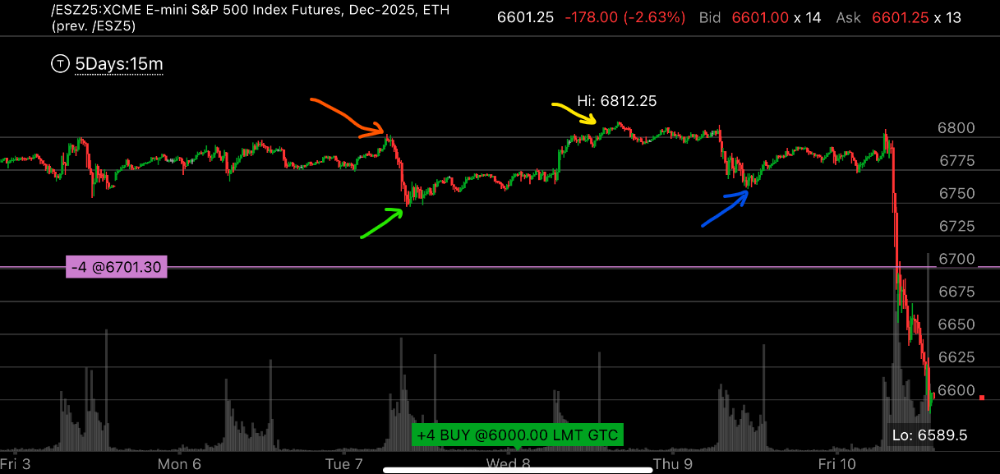

牛市中，暴跌前，出现相对强势
- 在牛市中，如果要暴跌，往往用相对强势来掩盖
- 它先是示弱，然后再显得很强，人为制造相对强势。结果是暴跌。

图示:
- 红色箭头，第一天，表示创新高后，立刻下跌，下跌幅度很大，速度很快，显得很弱。
- 绿色箭头，下跌后，一直在底部停留，显得很弱，缓慢的反弹，在低点停留时间很久
- 黄色箭头，第二天，它在低点停留后，再次上涨，创新高。黄色箭头是新高，然后，它没有像前面那样立刻下跌，而是持续上涨一点，然后停留在那里
显得非常的强势。
- 蓝色箭头，第三天，它开始下跌，和第一天相比，它下跌非常缓慢，令人印象深刻， 而且下跌一些，就停留很久。最后，下跌的最低点，也高于第一天最低点
这样更加显得强势。 它在低点停留时间很短，立刻反弹。 所有的一切，和前面的新高比，都显得强势。 无论是幅度，速度，还是在底部停留时间，都是如此
- 第四天，它再次反弹，接近新高，看起来似乎要再创新高了。让人很有欲望追高，结果它暴跌，虽然表面看是因为川普的推文引起的，但是实际上，早有埋伏了。